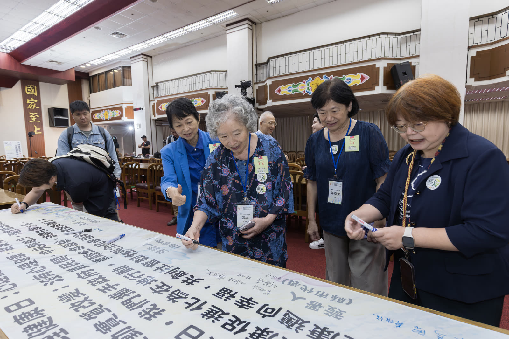
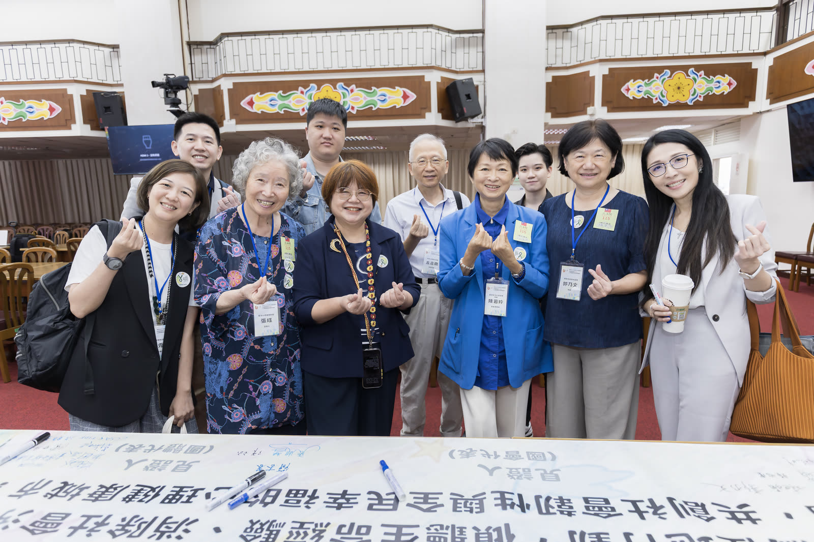
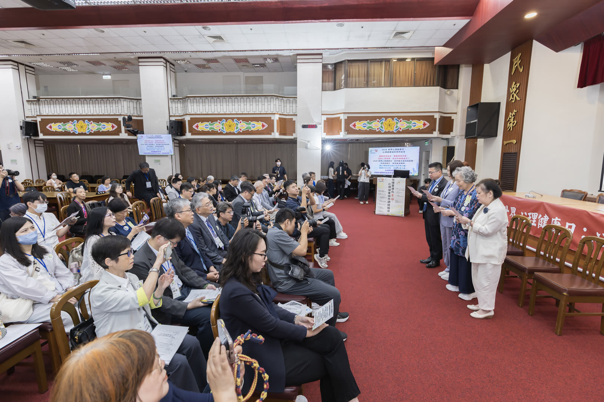
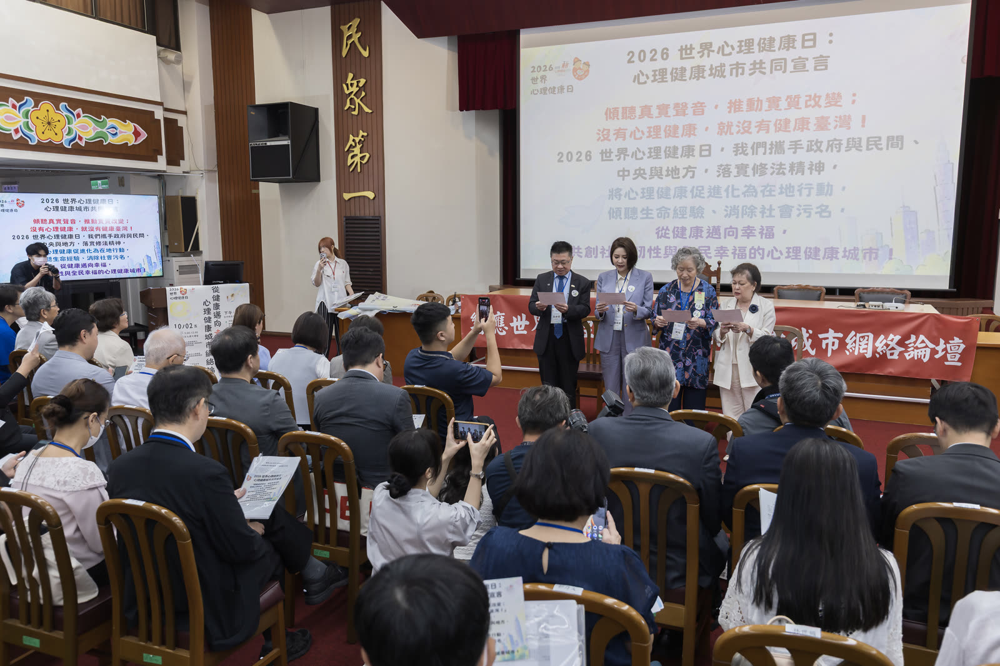
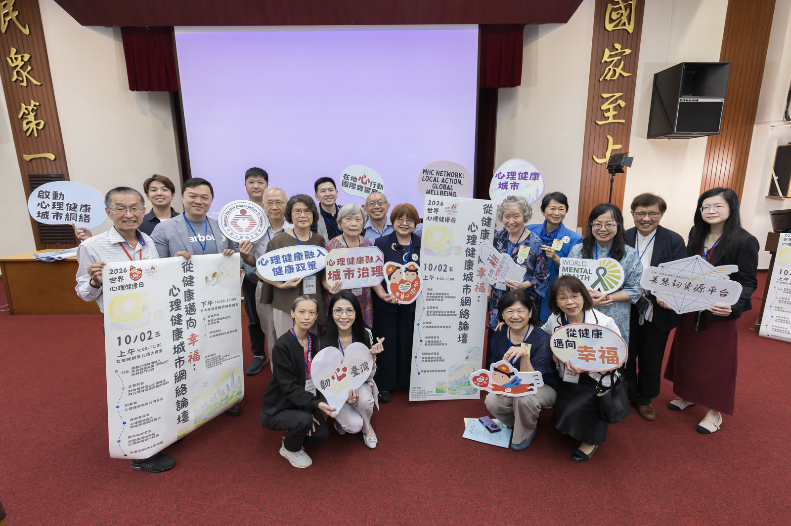
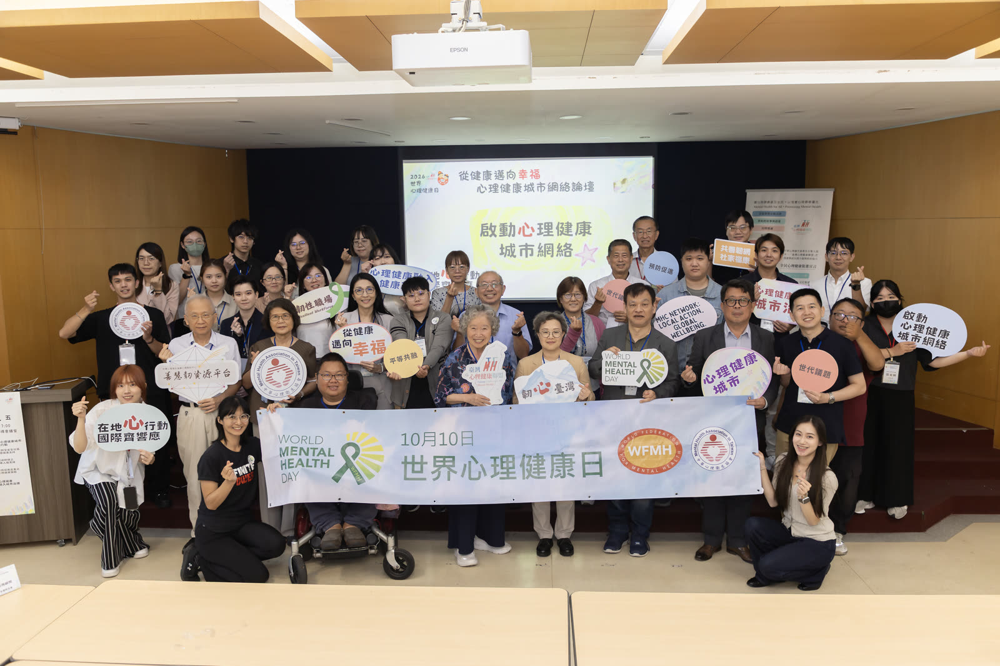

心理健康城市網絡論壇：從健康邁向幸福 會後記錄
地點：上午在立法院群賢樓；下午在台大校友會館
主辦：中華心理衛生協會暨臺灣心理健康聯盟
國教行動聯盟為臺灣心理健康聯盟盟友。本頁依主辦方會後新聞稿、議程、各講者簡報與現場發言整理，內容為上午各段重點與全日議程。官員、委員與首長的發言為轉述重點，非逐字稿，不等於承諾。各講者簡報連結至主辦方公開資料夾，著作權屬各單位。
A1原定議程 09:00–09:10依現場發言與公開資料整理
開幕致詞
- 張珏召集人，臺灣心理健康聯盟
- 林綺雲理事長，中華心理衛生協會
- 陳菁徽立法委員，立法院厚生會會長
- 陳菁徽委員：表示擔任厚生會會長之後，她和在座許多委員常常談到心理健康的問題。（出處：現場發言整理，並見主辦方會後新聞稿）
- 陳菁徽委員：提到全球有不少人受心理健康困擾，以焦慮、憂鬱居多，但真正去尋求協助的人比例偏低；她也提出疑問，是不是與被污名化、怕被貼標籤有關。（出處：現場發言整理，並見主辦方會後新聞稿）
- 陳菁徽委員：表示非常在意青少年的死亡率，希望降低他們的自殺率；厚生會近期成立了關注兒少心理健康的委員會，希望收集大家的意見，讓立法委員群策群力，為孩子做些什麼。（出處：現場發言整理，並見主辦方會後新聞稿）
- 陳菁徽委員：表示這一切有賴與行政端一起合作；通過精神衛生法之後，教育面也要落實心理健康教育，之後都需要大家一起協力。（出處：現場發言整理，並見主辦方會後新聞稿）
- 陳菁徽委員：說明世界心理健康日不應該只有那一天，希望每一天都能有更多人響應、有更多意識，對需要幫助的人伸出手。（出處：現場發言整理，並見主辦方會後新聞稿）
A2原定議程 09:10–09:25依現場發言與公開資料整理
立法委員發言
- 陳菁徽立法委員
- 王正旭立法委員
- 林月琴立法委員
- 邱慧洳立法委員
- 劉書彬立法委員
- 李彥秀立法委員
- 王正旭委員：表示心理健康是現代社會很重要的工作。（出處：現場發言整理）
- 王正旭委員：說自己在從事癌症服務的過程中，看到癌症病人在心理方面也特別辛苦。（出處：現場發言整理）
- 王正旭委員：提到自己曾經做過研究，原本從來沒有使用過心理方面的藥物的癌症病友，在被診斷為癌症的時候，至少有三成以上會開始使用相關的藥物，代表他們的心理健康特別需要大家的照顧。（出處：現場發言整理，並見主辦方會後新聞稿）
- 王正旭委員：表示相信社會因為城市化，會面臨更多心理健康的需求。（出處：現場發言整理）
- 林月琴委員：提到世界衛生組織提醒，心理健康是公共衛生的議題。（出處：現場發言整理，並見主辦方會後新聞稿）
- 林月琴委員：提到全世界目前有超過十億人面臨心理健康的問題。（出處：現場發言整理，並見主辦方會後新聞稿）
- 林月琴委員：表示單一的問題可能沒辦法只從衛福部處理，教育部等很多部會都有關聯；如果各部會能把心理健康議題放進政策裡，才有辦法解決。（出處：現場發言整理，並見主辦方會後新聞稿）
- 林月琴委員：表示孩子要好好長大，不是只靠幸運或運氣；在座的每一個大人，都應該為此負起責任，讓孩子有友善、健康的環境，快樂成長。（出處：現場發言整理）
- 邱慧洳委員：說自己是護理人員出身，在養成教育的過程中，對心理健康也多有接觸。（出處：現場發言整理，並見主辦方會後新聞稿）
- 邱慧洳委員：表示有心理健康才有健康臺灣，也才有健康的個人，才能在求學、工作和對社會的奉獻上展現光芒。（出處：現場發言整理，並見主辦方會後新聞稿）
- 邱慧洳委員：提到有一項心理健康方案，可以接受三次心理諮詢。（出處：現場發言整理，並見主辦方會後新聞稿）
- 邱慧洳委員：提到她也做過一個爭取，希望這項方案能開放到國中生，並說很希望衛福部能思考一下這個可行性。（出處：現場發言整理，並見主辦方會後新聞稿）
- 邱慧洳委員：提到護理人員工作高壓、過勞、要輪三班，睡眠長期不足，容易有憂鬱與焦慮；她為護理人員倡議，詢問這個方案是不是可以對護理人員加碼。（出處：現場發言整理，並見主辦方會後新聞稿）
- 邱慧洳委員：結語說，有健康的心理才有健康的臺灣，有健康的青少年才有健康的未來，有健康的護理人員才有健康的醫療；也期待衛福部在心理健康政策上再多做一點努力。（出處：現場發言整理，並見主辦方會後新聞稿）
- 劉書彬委員：說自己曾在大學任教，在當立委之前就是教師，所以特別重視老師的心理健康。（出處：現場發言整理，並見主辦方會後新聞稿）
- 劉書彬委員：表示老師不只是知識的傳遞者，也是學生的陪伴者。（出處：現場發言整理，並見主辦方會後新聞稿）
- 劉書彬委員：提到老師現在有非常多的行政壓力，並說要思考如何減量。（出處：現場發言整理，並見主辦方會後新聞稿）
- 劉書彬委員：表示學校應該給老師專業的輔導；除了預防性的支持，還要有資源的整合，才能給老師最大的支持。（出處：現場發言整理，並見主辦方會後新聞稿）
- 劉書彬委員：表示照顧好老師，就能把學生照顧好；學生照顧好，家庭幸福就是成功的一大半，並說老師能安心教學、學生能專心快樂學習、家庭都幸福，是最重要的途徑。（出處：現場發言整理，並見主辦方會後新聞稿）
- 李彥秀委員：表示在職場、家庭、親子關係和交朋友上，現在大家都有很多的壓力。（出處：現場發言整理，並見主辦方會後新聞稿）
- 李彥秀委員：提到這幾年，大家對心理衛生這一塊的關注度越來越高。（出處：現場發言整理，並見主辦方會後新聞稿）
- 李彥秀委員：提出疑問：專業人力到底留不留得住。（出處：現場發言整理）
- 李彥秀委員：表示要讓所有國人相信，只要願意開口，社會安全網對每一個人都會想辦法接住，過程中需要靠大家。（出處：現場發言整理，並見主辦方會後新聞稿）
- 李彥秀委員：以臺北市的向日葵學園為例，提到孩子不一定要在學校上課，也能得到輔導，並願意再回到校園。（出處：現場發言整理，並見主辦方會後新聞稿）
- 李彥秀委員：表示在學生與老師這兩個方面，她想立法院會持續努力。（出處：現場發言整理，並見主辦方會後新聞稿）
A3原定議程 09:25–09:35依現場發言與公開資料整理
記者會：心理健康城市共同宣言
- 中華心理衛生協會召集臺灣心理健康聯盟（77 個單位），在立法院群賢樓發布心理健康城市共同宣言，現場由台上貴賓帶領朗讀。宣言全文見本頁最後。（出處：現場發言整理，並見主辦方會後新聞稿）

心理健康城市網絡論壇：簽署宣言（一）照片提供：臺灣心理健康聯盟
心理健康城市網絡論壇：簽署宣言（二）照片提供：臺灣心理健康聯盟
心理健康城市共同宣言發布現場照片提供：臺灣心理健康聯盟
心理健康城市共同宣言發表現場照片提供：臺灣心理健康聯盟
盟友合照照片提供：臺灣心理健康聯盟A4原定議程 09:35–10:15依現場發言與公開資料整理
衛福部各司署及國衛院發言
- 陳柏熹司長，衛生福利部心理健康司
- 蔡維誼主任秘書，衛生福利部國民健康署
- 陳亮妤署長，衛生福利部中央健康保險署
- 簡杏蓉組長，衛生福利部社會及家庭署家庭支持組
- 陳為堅副院長，國家衛生研究院
- 陳柏熹司長：說明心理健康融入所有政策，是在所有公共政策制定、執行與評估時，系統性考量政策對人民心理健康的影響。（出處：現場發言整理，並見該講者簡報）
- 陳柏熹司長：提到歐盟已積極推動這項做法，芬蘭並立法要求所有政策都要評估對心理健康的影響。（出處：現場發言整理，並見該講者簡報）
- 陳柏熹司長：說明精神衛生法修法後，明定心理健康促進是由政府與民間投入資源，提升各層面的保護因子、減少不利的風險，來維護與增進人民的心理健康。（出處：現場發言整理，並見該講者簡報）
- 陳柏熹司長：說明全民心理健康韌性計畫自 114 年起推動，6 年投入 56.3 億元，結合 13 個部會，以心理健康融入所有政策為核心原則，並有六大策略。（出處：現場發言整理，並見該講者簡報）
- 陳柏熹司長：表示心理健康不只是衛生機關提供的服務，而是所有政策的共同責任，每個部會在每個政策裡都要一起思考。（出處：現場發言整理，並見該講者簡報）
- 陳柏熹司長：表示這不是口號，要以這個政策方向推進各部會，地方政府與民間團體也一起行動。（出處：現場發言整理，並見該講者簡報）
- 陳亮妤署長：提到精神衛生法納入心理健康促進之後，有了法源，也有了經費。（出處：現場發言整理，並見主辦方會後新聞稿）
- 陳亮妤署長：提到先前推動的方案，讓民眾更勇於求助、去污名化，心理健康融入各部會政策也有進展；但這些方案也造成不少優秀人力離開醫療院所。（出處：現場發言整理）
- 陳亮妤署長：表示在健保署，最重要的工作就是調整支付。（出處：現場發言整理，並見該講者簡報）
- 陳亮妤署長：舉例提到急重症的電療支付調整為原來的四倍，兒少心理方面、日間住院等項目也調整了支付。（出處：現場發言整理，並見該講者簡報）
- 陳亮妤署長：表示沒有停止對心理健康資源的挹注。（出處：現場發言整理，並見該講者簡報）
- 蔡維誼主任秘書：表示國民健康署在健康促進的過程中，是從全人照護的角度來做相關照護的工作。（出處：現場發言整理，並見該講者簡報）
- 蔡維誼主任秘書：提到世界衛生組織 1948 年對健康的看法，指健康涵蓋身體、心理與社會層面。（出處：現場發言整理，並見該講者簡報）
- 蔡維誼主任秘書：提到懷孕與產後的心理健康照護，有使用心情溫度計和憂鬱量表評估孕婦與產後的媽媽，需要轉介時會利用相關資源提供服務。（出處：現場發言整理，並見該講者簡報）
- 蔡維誼主任秘書：提到在民眾日常生活的健康促進裡，酒的問題也很重要，國民健康署推動拒酒 5 招，協助民眾面對酒的傷害，以及工作與生活壓力的挑戰；除了酒以外，應該還有其他更健康的選擇。（出處：現場發言整理，並見該講者簡報）
- 蔡維誼主任秘書：表示心理健康與心理衛生的問題，也是國健署持續要與各單位合作納入的部分。（出處：現場發言整理，並見該講者簡報）
- 簡杏蓉組長：以社福中心服務家庭為例，分享心理健康融入社會及家庭服務的經驗。（出處：現場發言整理，並見該講者簡報）
- 簡杏蓉組長：提到進到家庭時看到的脆弱性，例如經濟陷困、關係緊張，以及兒少與家庭成員的不利處境；背後的壓力會造成心理困擾，影響家庭功能。（出處：現場發言整理，並見該講者簡報）
- 簡杏蓉組長：表示一個人的心理困擾會牽動整個家庭，心理健康的改善有時要先處理讓家庭喘不過氣來的壓力。（出處：現場發言整理，並見該講者簡報）
- 簡杏蓉組長：提到家庭用不上心理健康資源，可能是擔心被污名化、被貼標籤，家人不願意接受安排，當下更迫切的是經濟問題，或使用資源上有障礙。（出處：現場發言整理，並見該講者簡報）
- 簡杏蓉組長：表示家庭外的照顧者也要關心他們的心理健康；照顧者把自己顧好，才能讓所服務的家庭獲得更穩定的照顧。（出處：現場發言整理，並見該講者簡報）
- 簡杏蓉組長：結語說，心理健康融入社會及家庭服務，不是增加一項服務，而是改變理解與支持家庭的方式。（出處：現場發言整理，並見該講者簡報）
- 陳為堅副院長：提出第一個問題：把心理健康放入健康政策有沒有好處，有沒有實證資料。（出處：現場發言整理，並見主辦方會後新聞稿）
- 陳為堅副院長：提到一項針對糖尿病、心血管疾病和憂鬱症共病病人的研究，比較分科就醫和整合性照顧；他說整合式照顧的控制效果，比分開去看的更好。（出處：現場發言整理，並見主辦方會後新聞稿）
- 陳為堅副院長：表示重點是要整合、找出有用的介入，而不是把問題拆開處理。（出處：現場發言整理）
- 陳為堅副院長：提到糖尿病控制到某個程度會有瓶頸，不少人到末期仍需要洗腎；他認為只處理身體疾病、沒有用整合的方式處理背後的心理問題，效果不會好。（出處：現場發言整理，並見主辦方會後新聞稿）
- 陳為堅副院長：也談到網路上的問題，表示不能只用傳統的親子關係來處理，需要立法部門在網路上做一些管制和相關措施。（出處：現場發言整理，並見主辦方會後新聞稿）
各講者簡報（連結至主辦方公開資料夾，著作權屬各單位）
A5原定議程 10:15–11:25依現場發言與公開資料整理
縣市分享：心理健康融入城市治理實際案例
- 黃建華局長，臺北市政府衛生局
- 郭乃文局長，臺南市政府社會局
- 林世媚執行長，雲林縣政府氣候變遷辦公室
- 黃建華局長：說明臺北市以整個城市作為行動的團體，由市長領軍建立跨局處合作網絡，涵蓋十個局處，也有社會團體代表與專家學者一起討論政策。（出處：現場發言整理，並見該講者簡報）
- 黃建華局長：提到心理健康不只是醫院裡單純的診斷，也是支撐市民生活穩定、職場生產力和社會安定的基礎，因此從全生命週期的角度來規劃。（出處：現場發言整理，並見該講者簡報）
- 黃建華局長：分享校園的做法：從校園的識別到家庭的支持，結合教育、衛生與社政資源，強化學生的情緒調適，由教師與家庭一起來支持。（出處：現場發言整理，並見該講者簡報）
- 黃建華局長：提到從長者的心理健康切入，結合社政、衛政與民政等資源，推行中高齡的情緒辨識；也結合區公所、體育局和產發局，串連店家、商家。（出處：現場發言整理，並見該講者簡報）
- 黃建華局長：表示目標是從健康邁向幸福，把心理健康變成城市的共同能力；並說心理健康是一個城市彼此照顧的能力。（出處：現場發言整理，並見該講者簡報）
- 黃建華局長：提到未來的願景，包括讓合作成為制度，並建立共同評價的指標。（出處：現場發言整理，並見該講者簡報）
- 郭乃文局長：說明臺南市遇到幾個大的災難，她想從社會局的角度，把過去許多的作為做一些整理。（出處：現場發言整理，並見該講者簡報）
- 郭乃文局長：表示心理健康不是一個定點，也不是穩定點，而是變化；這個世代有很多變化，需要有新的做法。（出處：現場發言整理，並見該講者簡報）
- 郭乃文局長：分享臺南市志工的回饋，說最有趣的發現是樂於學習、熱忱與團隊精神；一般認為的感恩和回饋，似乎不是治療和介入的重點。（出處：現場發言整理，並見該講者簡報）
- 郭乃文局長：提到災難發生時，電線桿直接被吹斷，臺南有 17 個區進入重災區。（出處：現場發言整理，並見該講者簡報）
- 郭乃文局長：表示做社會重建時，不可能另做新的制度，只能把既有的知識和過去的實踐整合起來；她以牙刷為例，說這些做法要成為平常的習慣，而不是災難發生時才去蓋牙刷工廠。（出處：現場發言整理）
- 郭乃文局長：表示心理健康是主流價值；用疾病來討論有點污名化，希望它成為社區的文化與習慣，在危機時才能有更大的機會。（出處：現場發言整理，並見該講者簡報）
- 林世媚執行長：提出疑問：心理健康城市到底是一個地方，還是一種感受；並說心理健康是人的問題，心理健康城市則是責任的問題。（出處：現場發言整理）
- 林世媚執行長：提到雲林常被聯想到農業大縣、高齡化與人口外流；年輕人離開不是不愛家鄉，而是會問回去有沒有工作、孩子的教育怎麼辦。（出處：現場發言整理，並見該講者簡報）
- 林世媚執行長：說明雲林積極布局 9+1 產業園區招商藍圖，希望雲林子弟出去學習後回頭找工作時，家鄉能成為選項；並把產業、教育、醫療、長照等串接起來，讓年輕人敢生敢養。（出處：現場發言整理，並見該講者簡報）
- 林世媚執行長：提到雲林把 AI 匯入農業防災，建立淹水風險預報，提前一到四個小時告訴農民哪裡可能會淹、風險有多高。（出處：現場發言整理，並見該講者簡報）
- 林世媚執行長：提到推動醫消聯防虛實整合系統，讓資訊可以提前傳到醫院，讓醫療端提早準備；並說希望每一個住在雲林的人，需要時都能被接住，也提到雲林有 221 處長青食堂，讓長輩走出家門、有人陪伴。（出處：現場發言整理，並見主辦方會後新聞稿）
- 林世媚執行長：結語說，幸福治理不是單一政策，比較像一個公式：工作、人才、家庭、健康、歸屬、未來感放在一起，才會成為一個人對城市的感受；希望打造的是一座人在這裡可以安心生活的城市。（出處：現場發言整理，並見該講者簡報）
各講者簡報（連結至主辦方公開資料夾，著作權屬各單位）
A6原定議程 11:25–12:00依現場發言與公開資料整理
學者與 NGO 代表回應
- 張淑慧榮譽理事長，臺灣照顧管理協會
- 王瀚陽理事長，國教行動聯盟
- 李思賢理事，世界心理衛生聯盟
- 丘彥南常務理事，中華心理衛生協會
- 張珏召集人，臺灣心理健康聯盟
- 張淑慧榮譽理事長：表示自己的題目是讓每個人都被接住，提到生活經驗被聽見、真實的聲音和真實的改變，並向在場的衛福部與各縣市提問：真實的聲音在哪裡。（出處：現場發言整理，並見該講者簡報）
- 張淑慧榮譽理事長：提到心理急救等做法，只佔心理健康影響因子的 20%；而另外 80%，大宗都是日常生活當中的環境。（出處：現場發言整理，並見該講者簡報）
- 張淑慧榮譽理事長：逐一談新住民、兒少、身心障礙者與高齡長者四類族群的處境；談新住民時，提到語言與文化會阻斷他們的求助意願，也缺少多語翻譯。（出處：現場發言整理，並見該講者簡報）
- 張淑慧榮譽理事長：引用一句權利倡議的話，說心理健康也一樣：沒有不利處境族群的參與，不要替他們認為他們心理健康需要什麼。（出處：現場發言整理，並見該講者簡報）
- 張淑慧榮譽理事長：邀請大家看看英國的社會處方箋，以及芬蘭跨部會的影響力評估。（出處：現場發言整理，並見該講者簡報）
- 張淑慧榮譽理事長：提出建議：所有法案送出之前，先做心理健康影響評估機制；發展社區的社會處方箋，並融入關懷據點和基層衛生所；落實真實的聲音，提醒不要再悲情化、污名化。（出處：現場發言整理，並見該講者簡報）
- 王瀚陽理事長：表示自己負責回應臺南災後心理重建的分享；肯定這是民間與社會局的一個很大的合作，也肯定把社工、諮商、臨床等專業的公會都納進來，認為這非常重要。（出處：現場發言整理，並見主辦方會後新聞稿）
- 王瀚陽理事長：提到一位長期在臺南災區工作的專家曾提醒，志工投入災區時，不要只有衝出去，也要注意志工自己的情緒危機有沒有被健康地處理。（出處：現場發言整理，並見主辦方會後新聞稿）
- 王瀚陽理事長：提到公務員也非常辛苦，並說不知道公務員有沒有災後心理健康、情緒危機處理方面的了解；他也請教局長，公務員、志工和老師這些服務人員，有沒有心理方面的計畫，或相關的知識，覺得這也很重要。（出處：現場發言整理，並見主辦方會後新聞稿）
- 王瀚陽理事長：表示很肯定局長從藝術、文化活動和社區支持切入；他說災後很多人會想離開，但當地的文化和藝術很寶貴，會讓人覺得這是自己的家，有歸屬感，願意在地落根，心裡也就安定了。（出處：現場發言整理，並見主辦方會後新聞稿）
- 王瀚陽理事長：建議是否可以邀請這些專家到各縣市的局處，分享這方面的經驗；也說如果在災難發生之前，就把預防和心理建設先做好，投入這個區域時，他相信會更容易。（出處：現場發言整理，並見主辦方會後新聞稿）
- 李思賢理事：表示自己雖然是世界心理衛生聯盟的理事，但最主要的身分是親身經驗者；他從出生就感染小兒麻痺，對心理健康有很多人生感觸。（出處：現場發言整理，並見主辦方會後新聞稿）
- 李思賢理事：舉例說，他從小到大，每一所學校的教室他都上不去，從小學就上不了樓上；學校為此做安排之後，他就會被當成弱勢、被烙印對待，也會有很多他不想要的同情和悲憫。（出處：現場發言整理，並見主辦方會後新聞稿）
- 李思賢理事：表示自己在師大努力希望建置一個無障礙的大學，到現在都沒辦法做到，連想去游泳讓身體稍微健康一點，也做不到。（出處：現場發言整理，並見主辦方會後新聞稿）
- 李思賢理事：代表世界心理衛生聯盟，說今年推動的主題是真實的經驗，希望能夠化為真實的行動。（出處：現場發言整理，並見主辦方會後新聞稿）
- 李思賢理事：說在所有設計的制度裡，他覺得每個環節都設計得很棒，但每次真的要問自己能不能也去追求更健康、心理更幸福的資源時，得到的答案是沒有人也沒有錢。（出處：現場發言整理，並見主辦方會後新聞稿）
- 李思賢理事：希望大家在這場論壇裡再想一想：想要變得更好、更健康的時候，有沒有機會、能不能獲得資源。（出處：現場發言整理）
- 丘彥南常務理事：自述是兒童青少年精神科醫師，參與中華心理衛生協會，也在臺大的校內輔導單位擔任顧問。（出處：現場發言整理，並見主辦方會後新聞稿）
- 丘彥南常務理事：提到臺大的身心障礙學生相當積極參與，也會針對校內無障礙需要改善的地方提案，表示這樣的參與非常重要。（出處：現場發言整理，並見主辦方會後新聞稿）
- 丘彥南常務理事：表示無障礙不只是硬體，還包括心理環境等層面，並提到日常歧視這件事情值得大家重視。（出處：現場發言整理，並見主辦方會後新聞稿）
- 丘彥南常務理事：表示重點不是去怪罪誰，而是大家重視之後，知道怎麼改善環境；若能促進友善、尊重、自我改善的環境，他相信心理韌性和心理健康幸福感都會增加。（出處：現場發言整理，並見主辦方會後新聞稿）
- 丘彥南常務理事：表示中央和地方合作非常重要；也提到兒少保護示範中心已經有好幾家，但不是每一個地方政府都有。（出處：現場發言整理，並見主辦方會後新聞稿）
- 丘彥南常務理事：分享自己在臺大醫院參與整合門診的經驗：各科在同一個時段看診，患者家屬可以看多科，團隊也有定期的工作討論；他覺得這是非常棒的事情。（出處：現場發言整理，並見主辦方會後新聞稿）
- 張珏召集人：回顧當年做過的心理健康融入所有政策計畫（衛福部委託）：2015 年開始做指標和評估，第一階段針對衛福部，第二年到相關部會的場域去落實。（出處：現場發言整理，並見該講者簡報）
- 張珏召集人：說今天看到不同層次的治理，以及衛福部的同仁，對這些議題都很用心，希望它能繼續往下發展。（出處：現場發言整理，並見主辦方會後新聞稿）
- 張珏召集人：說治理模式是全政府、全社會，是大家共同的責任；也希望不同的部會都能有這樣的概念。（出處：現場發言整理）
- 張珏召集人：說明接下來把時間留給在場的盟友和政府長官，也想聽聽基層的聲音，以及盟友在第一線碰到的現況。（出處：現場發言整理）
- 張珏召集人：向所有工作人員致謝，說沒有他們，這場會議不會舉辦得出來，也不會有今天大家這麼多的投入。（出處：現場發言整理）
- 盟友自由發言：上午最後開放聯盟盟友自由發言。（出處：現場發言整理，並見主辦方會後新聞稿）
各講者簡報（連結至主辦方公開資料夾，著作權屬各單位）
P0原定議程 14:00–14:15僅列議程
匯聚交流：分組議題說明
- 張珏召集人，臺灣心理健康聯盟（主席）
- 楊俐容創會理事長，臺灣芯福里情緒教育推廣協會（大場主持人）
本段目前僅列議程。
PT1原定議程 14:15–15:30僅列議程
分組交流第 1 桌：全人全齡全家全社區心理健康支持
- 黃雅羚常務理事，中華民國諮商心理師公會全國聯合會
- 楊俐容老師
本段目前僅列議程。
PT2原定議程 14:15–15:30僅列議程
分組交流第 2 桌：不利處境群體之心理健康人權實踐
- 李思賢理事，世界心理衛生聯盟
- 丘彥南常務理事，中華心理衛生協會
本段目前僅列議程。
PT3原定議程 14:15–15:30僅列議程
分組交流第 3 桌：預防與促進並重之心理健康策略
本段目前僅列議程。
各講者簡報（連結至主辦方公開資料夾，著作權屬各單位）
P8原定議程 15:45–16:00僅列議程
大團體會：各組報告各議題行動亮點
本段目前僅列議程。
P9原定議程 16:00–17:00僅列議程
心理健康融入城市治理總結回應：各組亮點核心共識
本段僅列議程。

下午論壇結束大合照照片提供：臺灣心理健康聯盟心理健康城市共同宣言
「傾聽真實聲音，推動實質改變；沒有心理健康，就沒有健康臺灣！」
2026 世界心理健康日，我們攜手政府與民間、中央與地方，
落實修法精神，將心理健康促進化為在地行動，
傾聽生命經驗、消除社會污名，
從健康邁向幸福，共創社會韌性與全民幸福的心理健康城市！
出處：主辦方會後新聞稿第 2 頁